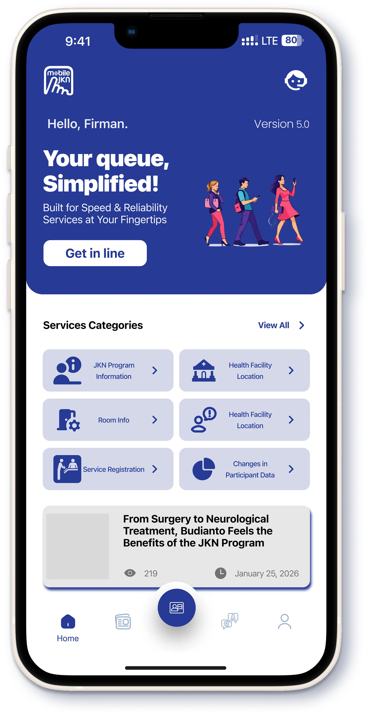

Design Showcase
Click on the design image to enlarge it.

Home Dashboard
Restructured the homepage layout to prioritize quick access to essential healthcare services.
Redesigning Indonesia's national health app to bridge the digital gap for millions of users facing complex bureaucracy.
Information overload and complex navigation patterns causing friction and cognitive overload in urgent health situations.
A streamlined interface with clear visual hierarchy, progressive disclosure, and simplified administrative access.
Click on the design image to enlarge it.

Restructured the homepage layout to prioritize quick access to essential healthcare services.
Purwarupa dinamis yang mendemonstrasikan perancangan ulang fitur pemantauan antrean Mobile JKN: dashboard antrean real-time, opt-in notifikasi WhatsApp, serta prediksi waktu tunggu berbasis Machine Learning yang memicu notifikasi proaktif melalui rule-based trigger.
Nomor antrean, nomor yang dilayani, sisa antrean, estimasi panggil, dan status (menunggu / dipanggil / terlambat / selesai).
Toggle izin pengguna pada halaman pengambilan antrean sebelum notifikasi proaktif dikirim.
Endpoint menerima sisa antrean, menghitung waktu_berangkat = prediksi − (t_travel + 10), dan memicu status berangkat.
Inferensi simulasi (heuristik: sisa × durasi histori × faktor jam) berjalan; pelatihan model regresi dengan dataset rumah sakit masih dalam riset.
Nilai waktu tempuh kini dimock pada backend; integrasi Distance Matrix API perlu menyusul.
Pengiriman pesan dijalankan sebagai mock; koneksi ke gateway WhatsApp resmi (Meta Cloud API) direncanakan pada tahap berikutnya.
Mobile JKN serves as the digital backbone of Indonesia’s National Health Insurance (BPJS Kesehatan), catering to over 200 million users.
The application suffered from information overload, cluttered navigation, and weak visual hierarchy, making it difficult for users to quickly access essential healthcare information during urgent situations.
I implemented a card-based information structure, progressive disclosure system, clearer participant card hierarchy, and simplified service navigation to improve readability and usability.